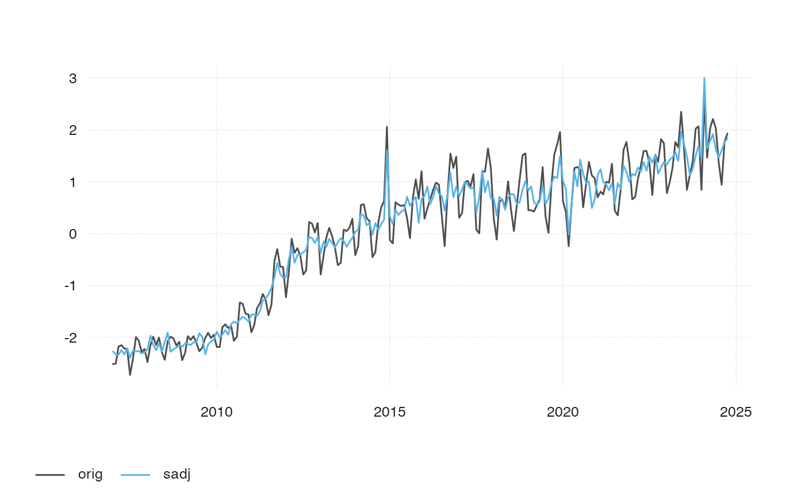

Uses the first principal component to construct an index.
ts_gtrends_index(
keyword,
time = paste("2007-01-01", Sys.Date()),
...,
sadj = TRUE
)
Arguments
| keyword |
A character vector with the actual Google Trends query
keywords. Contrary to gtrendsR::gtrends(), if different keywords are used,
mulitple queries are sent to Google, and each series is individually
normalized. |
| time |
A string specifying the time span of the query. Possible values
are:
- "now 1-H"
Last hour - "now 4-H"
Last four hours - "now 1-d"
Last day - "now 7-d"
Last seven days - "today
1-m"
Past 30 days - "today 3-m"
Past 90 days - "today
12-m"
Past 12 months - "today+5-y"
Last five years (default) - "all"
Since the beginning of Google Trends (2004) - "Y-m-d
Y-m-d"
Time span between two dates (ex.: "2010-01-01 2010-04-03") |
| ... |
further arguments, passed to gtrendsR::gtrends(). |
| sadj |
should the series be seasonally adjusted? Only works if resulting data is monthly. |
See also
Examples
#> Downloading data for 2007-01-01 2021-04-11
#> Downloading data for 2007-01-01 2021-04-11
